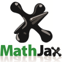

Behind the code.
My tools, contributions, and a few personal favorites.
Curious about systems.
Driven to build.
I’m an Information Technology student at Universitas Brawijaya interested in cryptography and blockchain. My public work includes a browser-based encryption app, tools for CTF creators and writeups, and hands-on experiments across the web.
I enjoy taking a technical idea and turning it into something people can use, test, and learn from.

Ariq Ardian
IT student exploring cryptography, blockchain, and CTF.
Tools I work with
DRAWN FROM MY GITHUB PROFILE & PROJECTSLanguages & Docker
Python · JavaScript · TypeScript · Kotlin · Java · HTML · CSS · Docker
02 Web & mobile
Frameworks and browser tools for usable interfaces.
- ReactInteractive UI components
- LaravelPHP web applications
- Express.jsLightweight Node.js APIs
- AndroidMobile experiences

MathJaxMathematical notation
03 Security & tools
The environment and utilities I use to build and test.
- Web Crypto APIBrowser-side cryptography
- IndexedDBLocal browser storage
- SageMathMath for cryptography
- GitVersion control
- LinuxDevelopment environment
Selected from public projects and my GitHub profile ↗
Awards
CTF results and recognition.
- 3rd Place SRIFOTON 6.0 CTF
- Finalist INFENTRA CTF
- Best Write Up TECHCOMFEST 2026
- Finalist ARA 7.0
- Finalist Find IT! 2026
- Finalist Gunadarma Code Week 2.0
- Finalist COMPFEST 18
Experience
Challenges built for security competitions and recruitment.
- Problem Setter for Recruitment Selection (Finals)
- Problem Setter for Recruitment Selection (FREEPASS)
- Problem Setter Cyber Hero Battlegrounds (Quals)
- HOLOGY 9 Problem Setter (Quals)HOLOGY 9 Problem Setter (Finals)BEM FILKOM UB · Oct 2026
Community
& Organizations
Groups where I learn, build, and contribute.
- Community Leader · Hack It BrawCommunity Member · Hack It BrawAug 2025 – Sep 2026
- Cyber Security Staff · POROS
- Community Member · GDG on Campus
- Staff PDD · COSMOS UB
- Cyber Security Competition · HOLOGY UB
More about my work on LinkedIn ↗
A little on repeat.
My favorite Japanese tracks. Pick a song and stay for a listen.
My top 4 anime.
Four favorites from my watchlist. Explore their stories on Wikipedia.